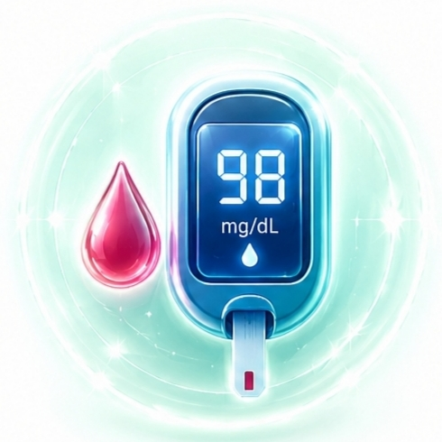
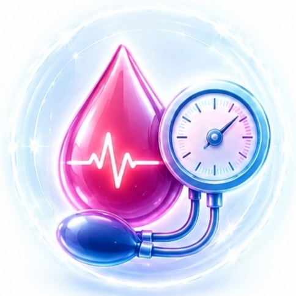

فوریتهای دیابت، فشار و چربی خون

شوک دیابتی (افت شدید قند)
شایعترین وضعیت اورژانسی در افراد دیابتی که به دلیل تزریق انسولین زیاد یا حذف وعده غذایی رخ میدهد. علائم آن شامل لرزش، تعریق سرد، گیجی ناگهانی و تپش قلب شدید است.
اقدامات اولیه
• بررسی هوشیاری: اگر فرد قادر به بلع است، فوراً یک ماده قندی سریعالجذب (نصف لیوان آبمیوه یا ۳ حبه قند حلشده در آب) به او بدهید.
• قانون ۱۵ دقیقه: ۱۵ دقیقه صبر کنید، اگر علائم برطرف نشد مجدداً ماده قندی بدهید.
• در صورت بیهوشی: به هیچ وجه مایعات در دهان او نریزید، او را به پهلو بخوابانید و فوراً با ۱۱۵ تماس بگیرید.

بحران فشار خون بالا
زمانی که فشار خون ناگهان به عدد ۱۸ یا بالاتر (180/120) میرسد و خطر آسیب جدی به عروق، مغز و قلب وجود دارد. علائم آن سردرد شدید پشت سر، تاری دید، درد قفسه سینه و خوندماغ است.
روش کمک رسانی
• آرامش و استراحت: فرد را در وضعیت نیمهنشسته قرار دهید و محیط را کاملاً آرام کنید تا اضطرابش کاهش یابد.
• عدم مصرف داروی خودسرانه: دوز داروهای بیمار را بدون تایید پزشک خودسرانه چندبرابر نکنید، زیرا افت ناگهانی فشار خون بسیار خطرناکتر است.
• تماس فوری: در صورت پایداری فشار خون بالا همراه با درد سینه یا تاری دید، بلافاصله با اورژانس تماس بگیرید.
حمله قلبی (ناشی از چربی بالا)
سطح بالای کلسترول و تریگلیسرید در طولانیمدت باعث رسوب در رگها و انسداد ناگهانی عروق قلب میشود. علائم اصلی آن درد فشارنده در مرکز قفسه سینه است که به دست چپ، گردن یا فک میزند.
علائم و اقدامات
• تماس فوری با ۱۱۵: هر دقیقهای که تلف شود، بخشی از عضله قلب از بین میرود.
• استراحت مطلق: فرد را کاملاً بیحرکت بنشانید و لباسهای تنگ او را شل کنید تا اکسیژن بیشتری به او برسد.
• مصرف آسپرین: در صورت هوشیاری کامل بیمار و عدم داشتن حساسیت دارویی، با تایید اپراتور اورژانس، یک قرص آسپرین به او بدهید تا بجود.
📋 چکلیست ارزیابی سریع علائم
- • دیابت (افت قند): آیا بیمار هوشیار است اما لرزش شدید دارد و بدنش یخ کرده؟ (فوراً قند سریعالجذب بدهید)
- • بحران فشار خون: آیا سردرد انفجاری پشت سر همراه با تاری دید یا خوندماغ دارد؟ (وضعیت نیمهنشسته و سنجش فشار)
- • چربی خون (حمله قلبی): آیا احساس سنگینی مفرط و فشار روی قفسه سینه دارد که به فک یا دست چپ میزند؟ (استراحت مطلق و تماس با ۱۱۵)
❌ اشتباهات مرگبار (نبایدها)
- • در دیابت: اگر فرد دیابتی دچار کاهش هوشیاری شده یا کما است، هرگز مایعات یا انسولین تزریق نکنید (خطر خفگی).
- • در فشار خون: برای پایین آوردن سریع فشار، هرگز دوز داروهای بیمار را بدون هماهنگی با پزشک چندبرابر نکنید.
- • در حمله قلبی: به هیچ وجه اجازه راه رفتن، سرفه شدید یا جابهجایی با خودروی شخصی و غیرآمبولانس را به بیمار ندهید.
نکته مهم
مطالب این صفحه صرفاً جهت افزایش آگاهی عمومی تهیه شدهاند و جایگزین توصیه پزشک یا آموزش تخصصی پزشکی نیستند. در شرایط اورژانسی همیشه با اورژانس (۱۱۵) تماس بگیرید.